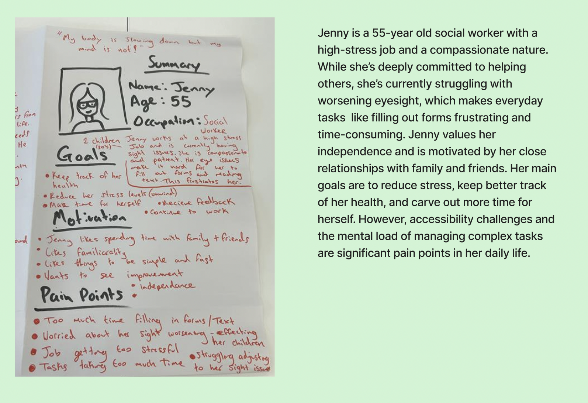
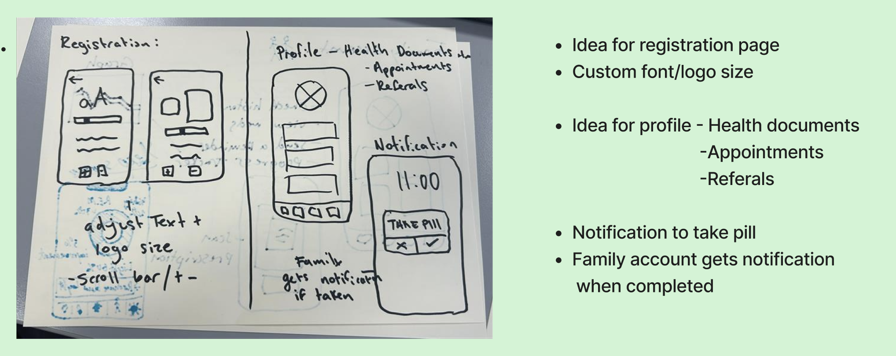
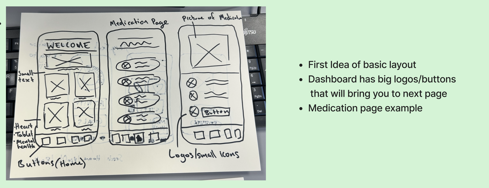
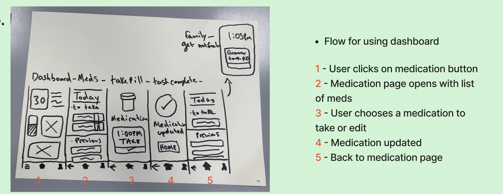
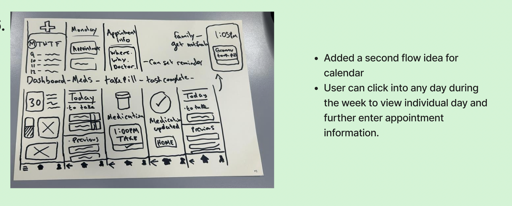
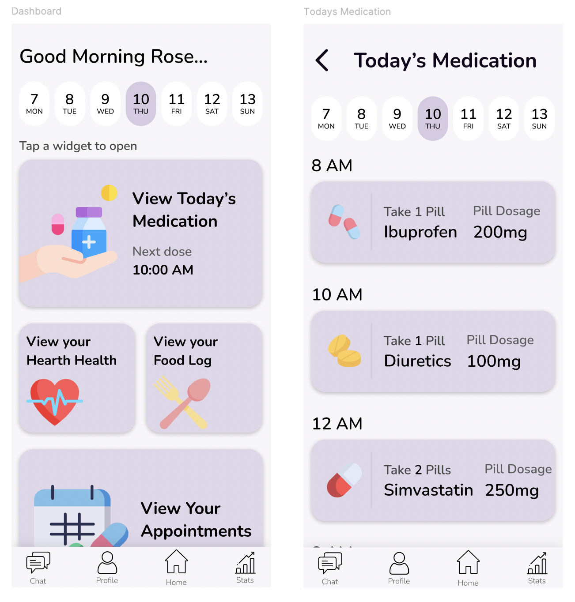
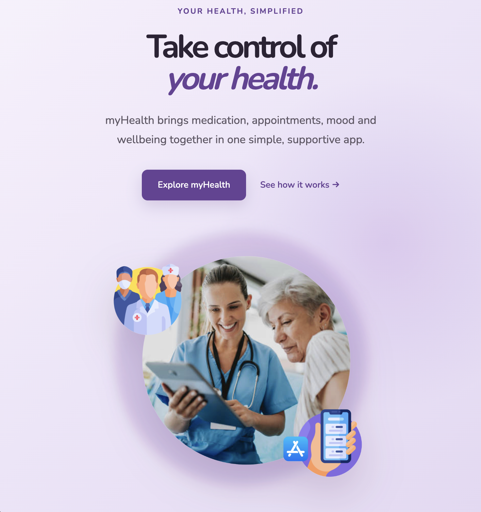

Health App
A collaborative mobile health application concept exploring how healthcare and wellness tools could be brought together into one intuitive experience for older adults.
View Figma Prototype ↗See how it works
The app was designed with accessibility and ease of use in mind. Clear navigation, simple layouts, readable text, and consistent interactions help make the experience easier to understand and use. UX decisions were focused on reducing complexity and supporting both patients and carers throughout the experience.
Patient’s Side
Carer’s Side
01 · OVERVIEW
Designing a more accessible health experience.
Our team focused on the healthcare and wellness sector, specifically adults aged 65 and older. We explored the challenges this demographic can experience when managing ongoing health needs and navigating outpatient care.
Older adults can be required to manage different aspects of their healthcare, including appointment scheduling, medication management and ongoing health monitoring. We identified an opportunity to explore a multi-modal mobile application that could bring these experiences together.
Our concept included tools such as sleep tracking, hydration reminders, meditation guidance, step tracking and access to mental health support. We also explored the possibility of connecting carers, doctors and GPs through a supporting interface to help manage outpatient care remotely.
02 · RESEARCH
Understanding the healthcare experience.
Our research focused on the healthcare and wellness needs of adults aged 65 and older. We considered the different tasks users may need to manage as part of their everyday healthcare journey.
This included areas such as appointment scheduling, medication management, health monitoring and maintaining general wellbeing. These considerations helped shape the direction of our proposed application.
View Team Research Board ↗03 · HEURISTIC EVALUATION
Evaluating existing healthcare experiences.
As part of my contribution to the project, I carried out a heuristic evaluation of existing healthcare applications.
I examined existing interfaces from a usability perspective, looking at how clearly information was presented and how users could navigate different tasks within the applications.
The evaluation helped identify potential usability issues and opportunities that could inform the structure and experience of our own proposed application.
04 · USER PERSONAS
Understanding our users.
Based on our research, we developed user personas to represent the needs, behaviours and challenges of our target audience.
The personas helped us consider how older adults might interact with a healthcare application and what could make the experience easier, clearer and more accessible.
They gave the team a clear reference point throughout the design process and helped us make decisions based on the needs of our intended users.

05 · USER FLOWS
Mapping the user journey.
I worked on user flows to explore how users could move through the proposed application and access different healthcare and wellness features.
Mapping the different journeys helped us think about the relationship between features and navigation before developing the more detailed interface designs.




06 · PAPER PROTOTYPING
Exploring ideas through prototypes.
I also worked on paper prototyping to explore possible layouts and interactions before moving into the final digital interface.
Paper prototypes allowed us to quickly experiment with different ideas and consider how the main features of the application could work together.
07 · UI DESIGN
Developing the final interface.
Following the research, evaluation and early prototyping stages, our team developed the visual interface for the mobile application in Figma.
The final concept brought together the different healthcare and wellness features explored during the project into a single mobile experience.

08 · PROTOTYPE
Bringing the interface to life.
The final screens were connected in Figma to create an interactive prototype demonstrating the main journeys through the application.
Prototyping allowed us to explore how the different screens and features would work together as one experience.
09 · COMPANION WEBSITE
Extending the experience to web.
Alongside the mobile application, I independently designed and developed a companion website for the Health App project.
This was an individual piece of work, allowing me to take the visual direction of the mobile concept and adapt it into a responsive web experience.
This part of the project also allowed me to combine my interest in UI/UX design with front-end web development.

09 · REFLECTION
What I learned.
This project gave me experience approaching a digital product from a UX perspective, from evaluating existing applications to exploring user flows and early prototypes.
Working as part of a team also gave me experience contributing to a larger design process and developing ideas collaboratively.
I particularly enjoyed the research and prototyping stages, as they allowed me to think about how users would interact with the product before focusing on the final interface.
Developing the companion website independently also gave me the opportunity to take the project further and apply the design thinking from the mobile application to a web experience.